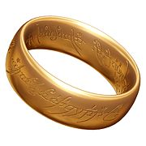

No universo de Tolkien, os Anéis de Poder foram forjados por Celebrimbor e seus companheiros, guiados por Sauron. Três anéis foram dados aos reis elfos, sete aos senhores das casas dos anões e nove foram dados à raça dos homens. Sauron, o Senhor do Escuro, criou em segredo um outro anel, o Um Anel, na Montanha da Perdição em Mordor, para controlar o poder dos demais anéis forjados pelos elfos.
O poder do Um Anel estava ligado à natureza maligna de Sauron, embora ele se manifestasse de diferentes maneiras de acordo com seu portador.

Fig. 1 - Anel de Sauron
Poderes
Por ser um símbolo do Eu-Universal, o Anel Soberano confere poder ao seu portador, mas um poder que está sempre de acordo com a estatura psicológica do ser que a usa. Esta característica é frequentemente salientada ao longo da trilogia. É por esta razão que Gandalf, Elrond e Galadriel recusam a sua posse.
Nas histórias de Tolkien, o Anel possuía vontade própria e sempre era atraído pela vontade de seu criador. O portador do Anel, não importasse sua índole, era atraído pelo seu poder e poderia até matar para ficar com ele (como Sméagol matou seu primo Déagol para ficar com o anel). Seu poder mais notório era o de deixar seu usuário invisível (na realidade o transportava para o mundo espectral), e possuía a propriedade de aumentar ou diminuir de tamanho e peso conforme o portador e a carga de energia negativa presente, também tinha controle absoluto sobre o próprio tempo e espaço, mas esse uso era apenas acessível para Sauron (ou para Gandalf, Elrond, Galadriel, Saruman e Radagast, se tivessem o anel) e podia controlar a mente e a vontade de qualquer ser vivo ou da própria natureza. Era indestrutível, exceto pelo fogo imortal da Montanha da Perdição, onde havia sido forjado.
Ao criar o Anel, Sauron simultaneamente aumentou e enfraqueceu o seu próprio poder. Enquanto tivesse o Anel em seu poder, Sauron podia controlar o poder de todos os outros anéis, e ficava significativamente mais poderoso do que era antes. Imbuir uma tão grande quantidade do seu próprio poder no Anel assegurava a existência continuada de Sauron enquanto o Anel existisse. Por outro lado, ao ligar-se desta forma ao Anel, Sauron tornou-se dependente dele; sem ele, o seu próprio poder ficava significativamente diminuído, e se este fosse destruído Sauron se perderia também.
Bilbo parece ter sido o único sobre quem o Anel Soberano não teve um efeito devastador. Mas tal deve-se ao facto de Bilbo se ter transformado com a sua viagem, iniciando a realização do seu Eu-universal.
Descrição
O anel era dourado, liso na circunferência externa, e com inscrições no alfabeto Tengwar de versos na língua proibida de Mordor. No lado externo, quando posto no fogo, aparecia escrito:
Um Anel para todos governar, um Anel para encontrá-los e no lado interno, quando posto no fogo:
Um Anel para todos fazer e na escuridão aprisioná-los.